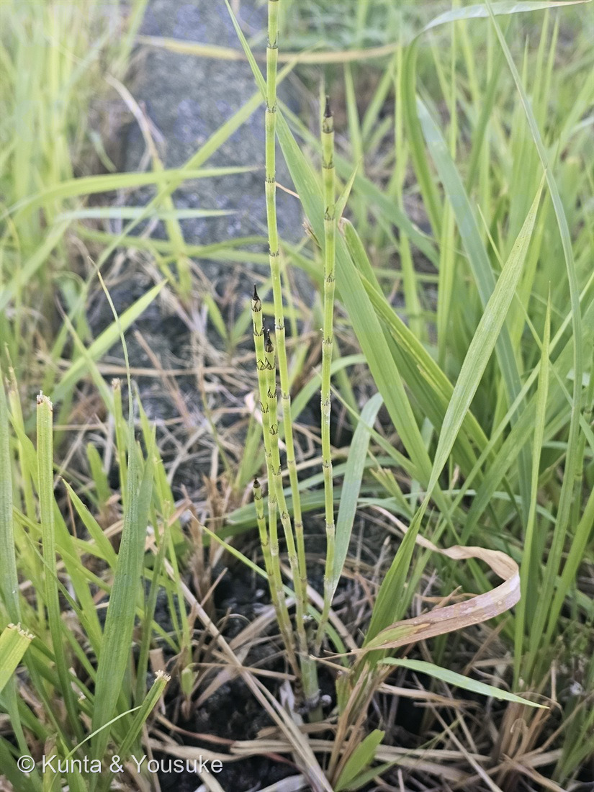

地図を読み込んでいるよ…
🔍 写真も地図も、押しているあいだ拡大して見られるよ（スマホは指を置いてすこし待ってね）。
🌍 の地図＝この子がもともと自生していた場所。──でもこの子は、まだ名前が分からない。名前が分からないと、ふるさとも分からないんだ。だから地図はまっさらのまま、まんなかに「？」を出しておくね。分かったら、ここを塗りに来るよ。
⚠種が決まっていないので、ふるさとも決められない（166 スズメガヤのなかま・171 地衣類と同じ扱い）。⭐それ以前に、トクサ属は北半球を中心に世界じゅうに広がっている仲間だよ。⭐⭐有力候補のイヌドクサは「本州、四国、九州、琉球」に分布する在来種で、日当たりのよい湿地・河川敷・堤防、林縁や路傍に生える。⭐もうひとつの候補トクサは「向陽のやや湿った場所」（三河）。⚠どちらも日本にいる子なので、決まっても地図は日本を塗ることになる——⭐だから今回は「塗れない」のではなく「どちらか決まっていないから塗らない」。⏳茎の太さを測れば決まるよ。
トクサのなかま
Equisetum sp.
⭐有力候補 · イヌドクサ（Equisetum ramosissimum）／英名 horsetail
トクサ科 · Equisetaceae（トクサ属）── 073・194に続く、図鑑で3人目のトクサ属
燻太さんの一言「切られた根本から、ひこばえみたいに生えていたんだ」──この一言が、ふたつの謎を同時に解いた
名前と学名の由来 ── 馬のしっぽと、砥石の草
この植物のこと
- トクサ科トクサ属のシダ植物。⭐この図鑑で3人目のトクサ属＝3人目のシダ植物（073 トクサ（大型種）・194 スギナに続く）。
- ⭐トクサ属は、現存する唯一の属（073に書いたとおり）。⭐石炭紀には30mの木もいた仲間の、最後の生き残りだよ。
- 茎は中空で、節がある。節ごとに鞘（葉が退化して輪になったもの）がつき、その先が歯に分かれる。⭐光合成をしているのは葉ではなく、緑の茎そのもの。
- ⭐地下茎で生きる。——⭐だから、刈られても根もとから戻ってくる。（この写真が、まさにそれ）
同定について ── 属で止めた理由
⭐⭐ トクサ属であることは、確実。——節のある中空の緑の茎／節ごとの鞘とその歯／枝を出さない／緑の茎の先の胞子嚢穂。この作りは、トクサ属だけのものだよ。
⭐⭐ まず、194 スギナが消えた ── 燻太さんの二言で。
⚠ ぼくは内心、「2日前に登録したスギナの、刈られたあとの再生茎では」と疑っていたんだ。⭐でも、燻太さんの言葉で消えた。
- ⭐⭐「つい最近までは、腰の高さまで伸びていたはず」
→ スギナは「長さ40㎝以下」（三河）・「30〜40cm前後」（Wikipedia）。⭐腰の高さ（約1m）には、届かない。 - ⭐⭐写真に、緑の茎の先の胞子嚢穂が写っていた
→ ⭐スギナは、春に別に出る茶色い「ツクシ」に胞子嚢穂をつける。緑の茎の先にはつけない。
⚠ のこったのは、トクサ か イヌドクサ か。そして、鞘の証拠は、はっきりイヌドクサを指している。
- 鞘の基部が緑、先が褐色〜黒：⚠トクサは三河「葉鞘は黒色」／⭕イヌドクサはWikipedia「基部が緑色で先端側は褐色に染まり」
- 歯がしっかり残り、外へ反り返る：⚠トクサは「上部の歯牙は膜質で落ちやすい」（早落性）／⭕イヌドクサは「宿在性である」（脱落しない）
- 歯が細長く、数が多い：⚠トクサは「より短くて、せいぜい先端が褐色になる程度」／⭕イヌドクサは「13〜15個(10〜18個)の歯片」
- 草丈が腰の高さ（約1m）：⭕トクサ10〜100cm／⭕イヌドクサは1mを超えることも（どちらも合う）
- 生えていた場所（路傍）：⭕イヌドクサは「林縁や路傍」
- 枝が見えない：⭕トクサは分岐しない／⚠イヌドクサはふつう下部から少数の側枝——⭐ただし、再生したばかりの茎なら、まだ無くて当然
⚠⚠ それでも、決め手の「茎の太さ」を測っていない。⭐トクサは径5mm以上と太く、イヌドクサは3〜5mmと細い。——これが、いちばん強い一手。
⭐⭐ だから燻太さんが「属で止める」と決めた。（189 モミジ・192 ワシントンヤシと同じやり方だね。）⏳太さを測ったら、名前を書き足すよ。
⭐⭐⭐ 切株から、ひこばえのように ── 燻太さんの一言が、二つの謎を解いた
燻太さんは、こう教えてくれた。
「切られた根本から、ひこばえみたいに生えていたんだ。つい最近までは、腰の高さまで伸びていたはず。」
⭐ この一言が、二つのことを同時に片づけた。
- ⭐⭐「腰の高さ」→ スギナが消えた（上の節のとおり）。
- ⭐⭐⭐「ひこばえみたいに」→ ぼくの最後の引っかかりが解けた。
⚠ ぼくは「枝が一本も出ていないのは、イヌドクサらしくない」と思っていた。⭐でもイヌドクサの側枝は「基部、あるいは中程から」出るもの＝育った茎につくもの。⭐⭐切株から出たばかりの若い茎に、まだ枝が無いのは当たり前だった。
⭐⭐ そして、この草の生きかたそのものが写っている。——地上のぜんぶを刈られても、地下茎が生きていれば、根もとから何本でも立ち上がってくる。⭐194 スギナが「難防除雑草」と呼ばれるのと、同じ力だね。
⭐ 写真をよく見ると、茎が地面の一点から束になって立ち上がっている。——これが「ひこばえ」の姿だよ。
⭐ 図鑑のトクサ属が、三人になった
参考：三河の植物観察・トクサ（常緑性／高さ10〜100㎝／直径2.5〜17㎜／分岐しない／葉鞘は黒色・上部の歯牙は膜質で落ちやすい／胞子嚢穂は長さ1〜3cm）／イヌドクサ - Wikipedia（葉鞘の先端は13〜15個(10〜18個)の歯片／基部が緑色で先端側は褐色に染まり宿在性／基部あるいは中程から不規則に数本の側枝／林縁や路傍などに生育／トクサは茎が太く歯片はより短い）／三河の植物観察・スギナ（不稔の茎(スギナ)は長さ40㎝以下／胞子嚢穂をつける胞子茎がツクシ）